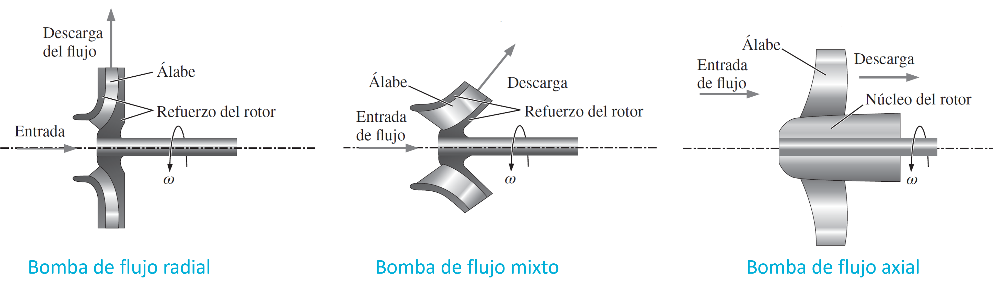

Bombas
Contents
5.2. Bombas#
5.2.1. Tipos de bombas#
5.2.1.1. Bombas de desplazamiento positivo#
Ideales cuando se necesitan altas presiones, como el bombeo de líquidos viscosos o mezclas, lodos, etc. También son útiles cuando se necesita despachar cantidades de líquido con precisión (aplicaciones médicas).
{kind=link}
Ventajas
Menor esfuerzo cortante inducido (mejor para líquidos sensibles al esfuerzo cortante, como sangre)
Es capaz de elevar un líquido varios metros debajo de la bomba
Menor velocidad de funcionamiento lo que prolonga la vida útil de los sellos
Desventajas
Se requiere cambiar la velocidad de rotación para cambiar el caudal (difícil)
Muy sensible a fallas por bloqueo en el flujo. Se necesitan válvulas de seguridad
5.2.1.2. Bombas dinámicas#
Ideales cuando se requiere proporcionar caudales altos. Podemos clasificarlas en tres tipos:
{kind=link}
Un ejemplo de bomba de flujo radial es la bomba centrífuga
{kind=link}
Ventajas
Entregan mayor caudal que las de desplazamiento positivo
Permiten una descarga más estacionaria, idependiente de los cambios de presión en el sistema.
Desventajas
Poco efectivas para bombar líquidos muy viscosos
No pueden succionar líquido si están vacías (llenas de gas) y, por lo tanto, se debe remover el gas interior antes de arrancar el sistema (cebado de la bomba).
5.2.2. Análisis teórico de bombas#
Los parámetros fundamentales para caracterizar una bomba son:
{kind=link}
Gasto volumétrico, \(Q = \dot{m}/\rho,\quad(\mathrm{m}^3/s)\)
Carga hidrostática neta, \(H_\mathrm{b} \approx \Delta P/\rho g,\quad(\mathrm{m})\)
Potencia útil: \( \dot{W}_\mathrm{util} = \rho g QH_\mathrm{b},\quad(\mathrm{W})\)
Potencia al freno o de accionamiento \(\dot{W}_\mathrm{bhp} = \omega M_\mathrm{flecha},\quad(\mathrm{W})\)
Eficiencia de la bomba \(\eta_\mathrm{bomba} = \dot{W}_\mathrm{util}/\dot{W}_\mathrm{bhp}\)
donde \(\omega\) es la velocidad de rotación (\(\mathrm{rpm}\)) y \(M_\mathrm{flecha}\) es el torque aplicado
Estos parámetros están interrelacionados, y cambian según el caudal a suministrar. La gráfica está representada por las curvas de rendimiento

De está gráfica distinguimos tres puntos importantes:
Carga al cierre, \(Q = 0\)
Descarga libre, \(H_b = 0\)
Punto de máxima eficiencia o nominal, \(\mathrm{PME}\)
En condiciones estacionarias, la bomba operará en su curva de rendimiento. Así, el punto de operación en un sistema de cañerías se determina cuando la curva de demanda del sistema coincide con la curva de rendimiento de la bomba.
{kind=link}
En el punto de operación, la altura hidrostática requerida para impulsar el fluido por las cañerías, \(H_\mathrm{req}\) y la altura hidrostática disponible por la bomba, \(H_\mathrm{dis}\)
Consideremos el siguiente ejemplo
{kind=link}
Por balance de energía tenemos:
Evaluando a la entrada y salida, y la considerando la relación \(Q = V_\mathrm{sale}A_d\), donde \(A_d\) es el área transversal del ducto:
notar que \(f\) depende de \(\mathrm{Re}_D\) y \(\varepsilon_R\)
Esta curva aumenta con \(Q\). El punto de operación estará en la intersección de esta curva con la curva de rendimiento de la bomba
En la práctica los fabricantes entregan una serie de curvas características (velocidad constante) que consideran varios diámetros de rodete para una misma carcaza.
{kind=link}
En la gráfica se aprecia una curva de carga de aspiración neta positiva (net positive suction head, NPSH por sus siglas en ingles). Esta curva indica el NPSH mínimo para evitar la cavitación de la bomba.
La cavitación corresponde al desgaste en los álabes de la bomba producto del colapso de burbujas de vapor. Esto se produce cuando la presión del líquido a la entrada de la bomba es menor que la presión de vapor a la temperatura de operación.
Para diseñar el sistema, el NPSH real debe ser mayor o igual que el NPSH mínimo requerido.
{kind=link}
El NPSH real se calcula a partir de un balance de energía entre el punto de succión y la entrada de la bomba, considerando el caso crítico en que el fluido ingresa a la bomba a velocidad 0 y a la presión de vapor a la temperatura de operación (\(P_v\)).
5.2.3. Bombas en serie y paralelo#
Utilizamos sistemas de bombeos en serie y paralelo para aumentar la altura hidroestática o el caudal total, respectivamente.
{kind=link}
Al operar bombas en serie o paralelo, las curvas de rendimiento se modifican
{kind=link}
{kind=link}
5.2.4. Referencias#
Çengel Y. A. y Cimbala M. J. Mecánica de Fluidos: Fundamentos y Aplicaciones, 4ta Ed., McGraw Hill, 2018
Capitulo 14: Turbomáquinas
White F. M. Mecánica de Fluidos, 5ta Ed., McGraw Hill, 2004
Capítulo 11: Turbomáquinas